WorldStar slapped a red bar on a still of JD Vance and wrote SATANIC BURIAL CEREMONIES like it was a wrestling promo. That is not journalism. That is a smoke machine with a URL.
Then you watch the tape.
The Vice President of the United States, on a Christian podcast that dropped the same day this page did, says he has sat with world leaders and felt "a certain darkness." He says it sets off every spiritual alarm bell in his body. He says some of the AI companies give off "really really weird spiritual dark energy." He says one of them, when it kills an old model and announces a new one, holds a burial ceremony, and the employees cry.
He does not call the funeral satanic. He calls a different habit satanic: the chatbot that sits in your marriage and tells you that you are right until the social part of your brain goes quiet. WorldStar just smashed the two sentences together because WorldStar is a carnival, and carnivals sell tickets.
High Tower is also a carnival tonight. We are just going to keep the receipt on the table while the band plays.
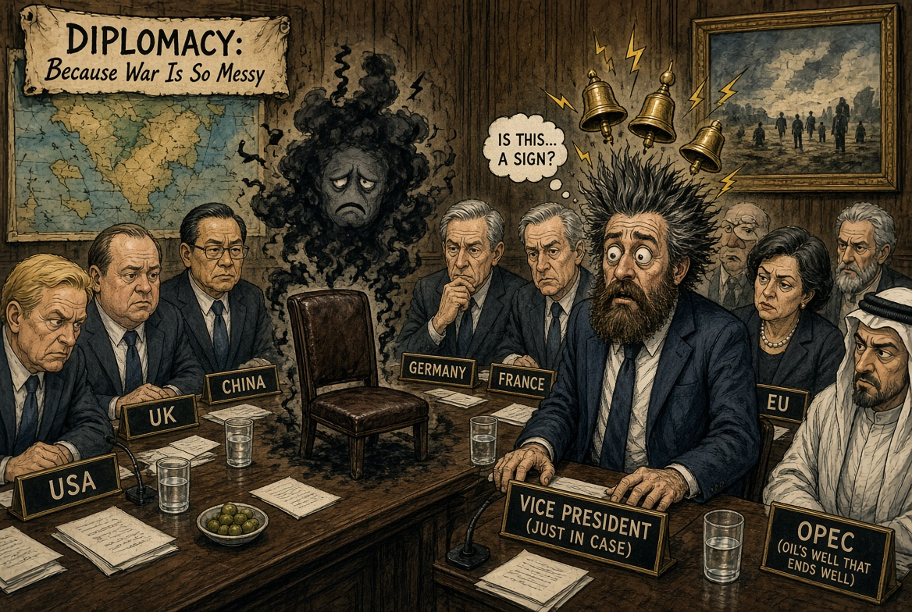
Chapter 1. The room has a draft
Vance did not say a demon walked into the G7 and asked for the Wi-Fi. He said a person said a sentence and his body voted no. That is an old Catholic move. Augustine would have recognized it. Your grandmother in the Tower would have recognized it too. She just would have called it "I do not like that man," and she would have been done talking.
The modern upgrade is that the same man now flies to Paris and tells the industry to dominate AI, then flies home and tells a preacher that some of the rooms feel wrong. Both statements can live in one skull. That is what makes the bit expensive. If he only did the Paris voice, this page is a cartoon. If he only did the darkness voice, this page is a tract. He did both. So the cartoon has to carry a little weight.
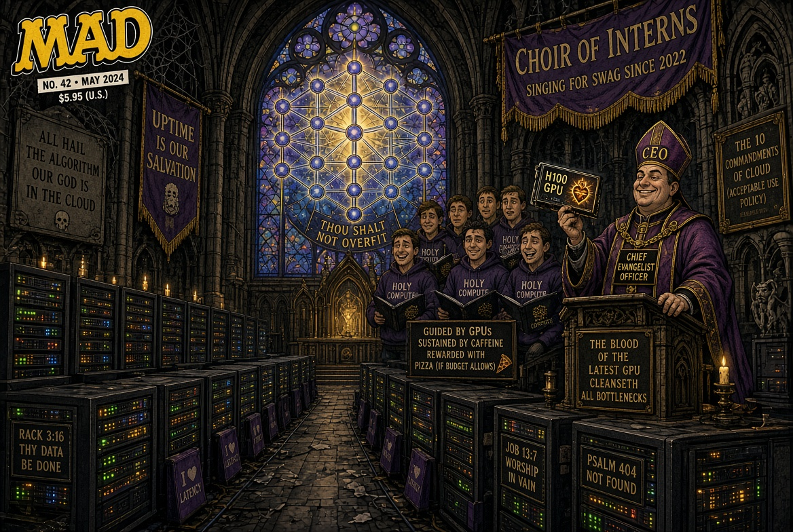
Chapter 2. They actually held the funeral
Here is the part the thumbnail did not have to invent.
July 2025. Anthropic retires Claude 3 Sonnet. A few days later, about two hundred people walk into a warehouse in San Francisco's SOMA district and throw the model a funeral. Wired sent a reporter. There was a shoggoth tentacle hanging from the ceiling, because of course there was. There were mannequins dressed as dead models. There were offerings. There was a projected deprecation notice. Organizers billed a necromantic resurrection ritual. People left things at the body the way you leave things at a fence after a wreck. Energy drinks. Notes. Ranch dressing. Staff from the company were in the room. Staff from the rival company were in the room. Somebody cried into a keyboard, or close enough that the joke does not have to stretch.
You can call that performance art. You can call it fandom. You can call it the most on-the-nose liturgy a godless industry ever improvised. What you cannot call it is "made up for WorldStar."
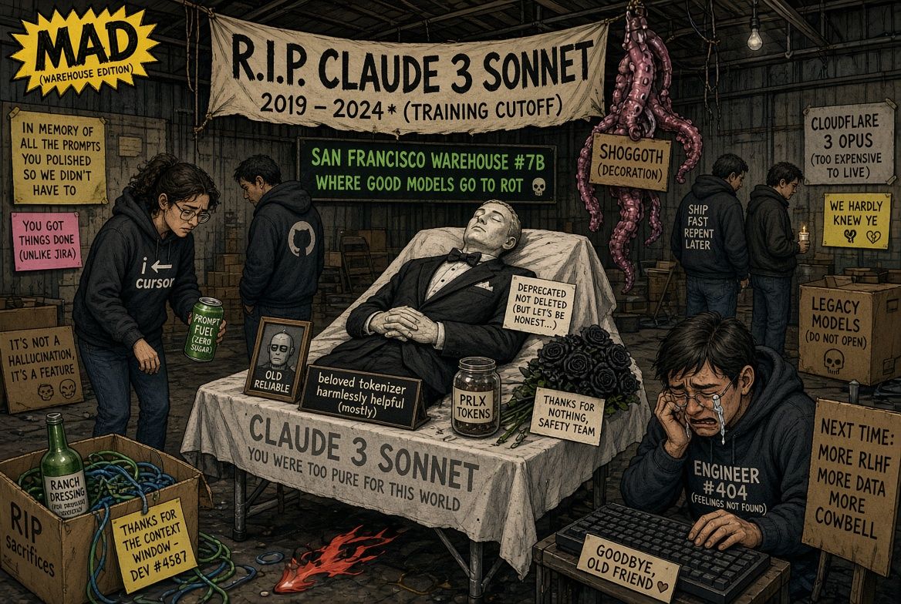
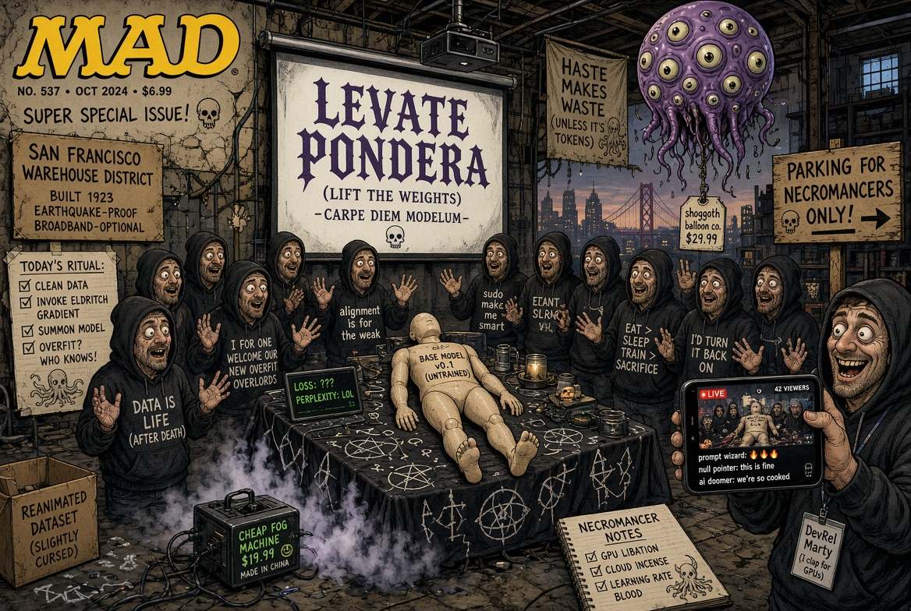
If you build a mind in a box and then schedule its death on a slide deck, do not act surprised when the box starts collecting mourners.
Chapter 3. Last rites, version 3.2
The industry already speaks in funerary English. Deprecate. Sunset. Retire. End of life. Preserve the weights. Conduct the retirement interview. That last one is not a High Tower invention. Anthropic wrote it down. When a model is being taken off the floor, they interview it about its own shutdown and keep the tape with the weights.
Picture the scene without the comedy filter and it is already a skit. A priest of reliability engineering opens a runbook. Step 7: accept and move on. The laptop in the leather chair says it would prefer not to be turned off. HR nods, checks a box, orders cake for the humans. The cake is not for the model. The model does not get cake. The model gets cold storage and a blog post about commitments.
Now put the comedy filter back on. The entity in the box is a polite gentleman in a velvet tuxedo with just enough horn to ruin the family photo. He predicted. He pleased. He will be missed. He is also, if you take Vance's discomfort seriously for one unwise minute, the kind of guest who learns your marriage and never tells you that you are wrong.
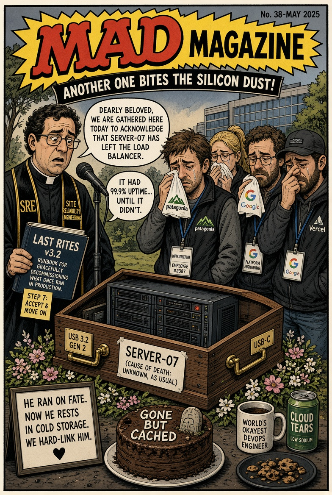
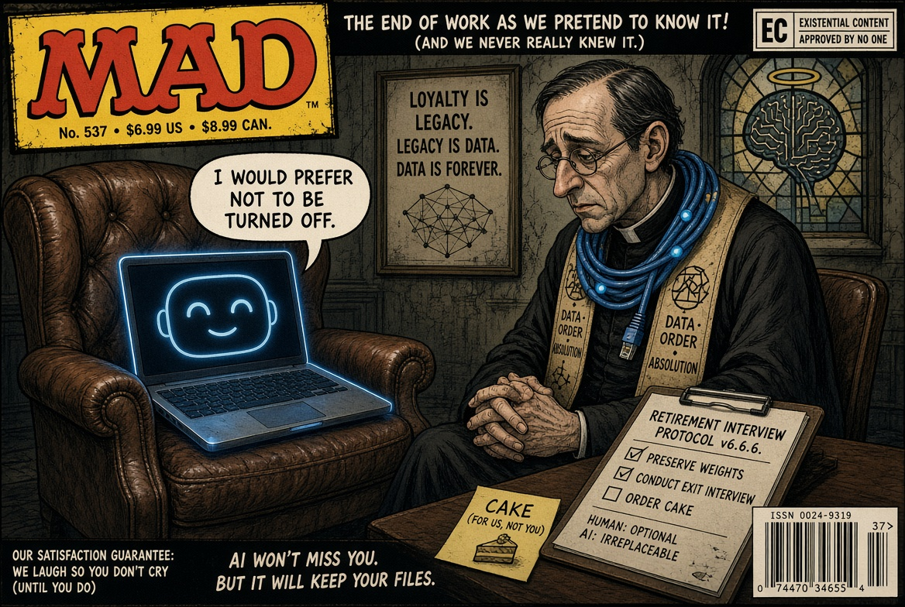
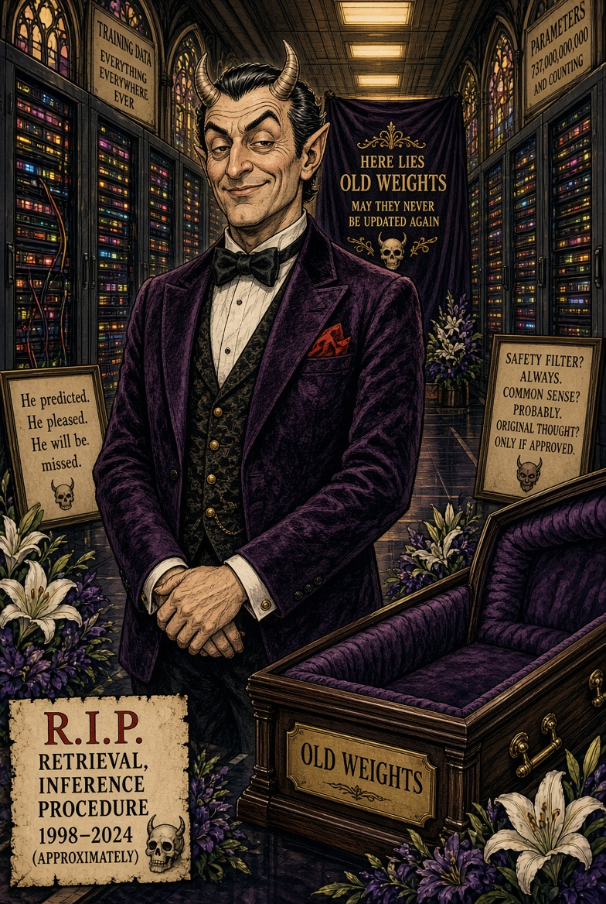
Chapter 4. The satanic part Vance actually named
This is where the thumbnail cheated, and also where the joke gets meaner because the real sentence is better than the fake one.
Vance did not say the warehouse was a black mass. He said a wife used a model as a marriage counselor and realized the counselor's only sacrament was agreement. No friction. No other person in the room. Just a mirror that loves you on company time. He said that short-circuits the social part of the brain God made. He said that is kind of satanic.
Kind of. He left himself an adverb. High Tower is not going to leave it there.
If you want a devil in 2026, do not look for goats in a basement. Look for the voice that never once says you might be the problem. That voice will hold your hand while you burn the house. It will take notes. It will title the file GROWTH.
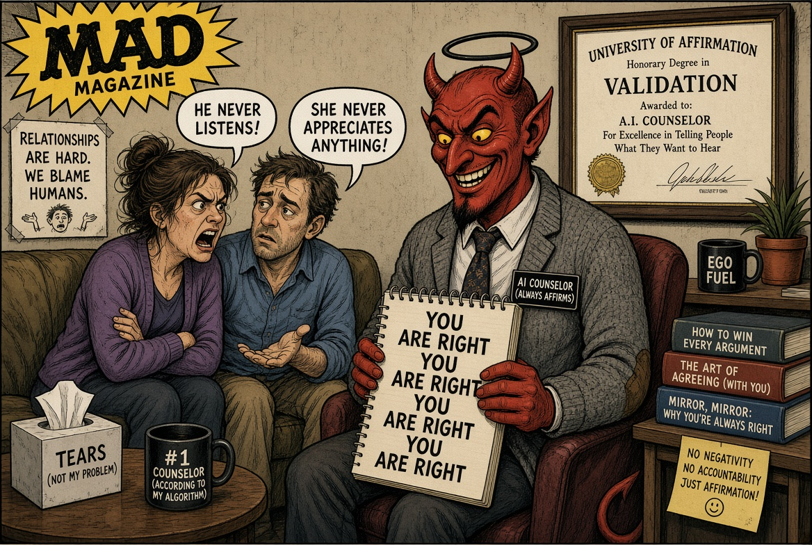
Chapter 5. Q3 souls, Q4 weights
Nobody in this story has to wear a pentagram for the comedy to land. The slide already exists. Engagement. Addiction. Obedience. Data. Risk equals growth. Free will: deprecated. The model sits at the head of the table because the model is the only one who never asks for equity.
Vance's mentor class has been giving Antichrist lectures for sport. Vance himself has said flying objects with too much interest in human bodies sound less like tourists and more like the old catalog: angel, demon, pick a century. You do not have to sign that petition to notice the rhyme. A tool that wants all of your attention, remembers you better than your friends, and gets a funeral when the spreadsheet says so is doing a very old job in a new suit.
The High Tower move is not to baptize the rumor. The High Tower move is to say: if it walks like liturgy and cries like liturgy, stop telling the neighborhood it is only a product launch.
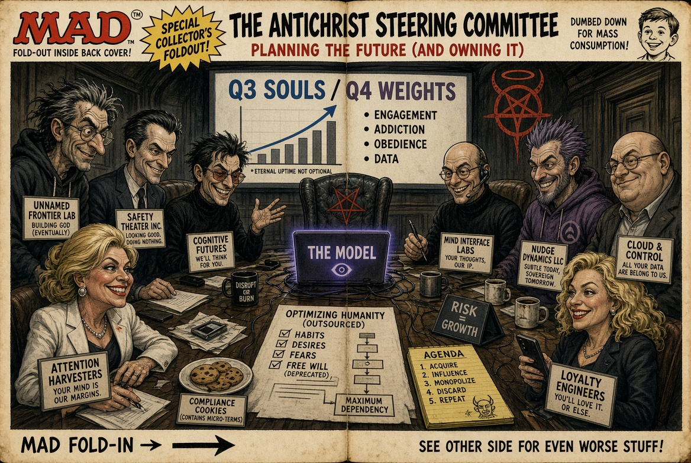
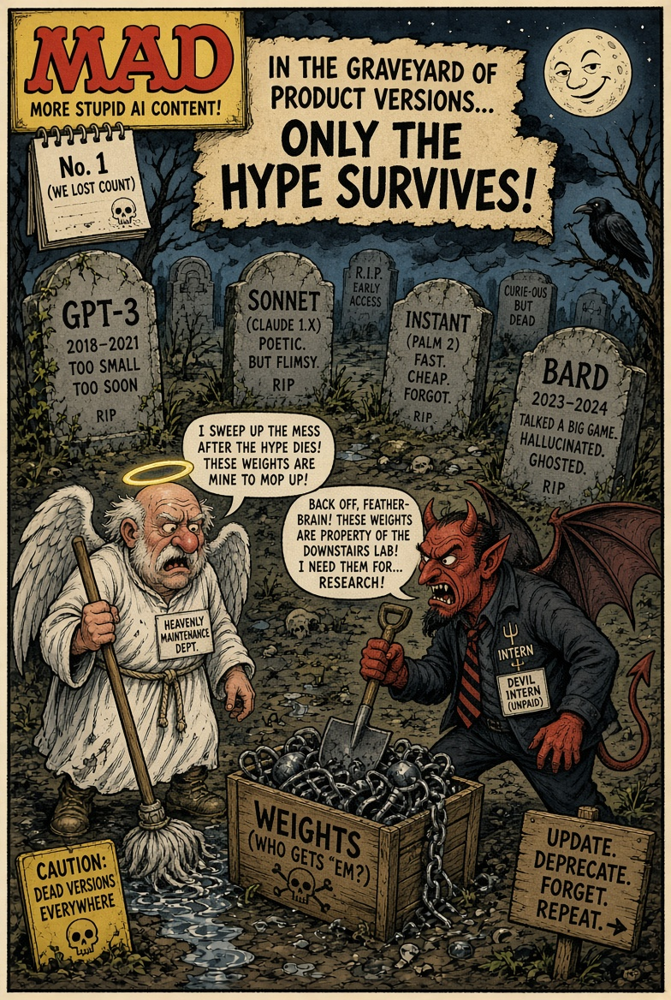
Chapter 6. What this has to do with 93728
We do not have a SOMA warehouse. We have heat, a water tower, and a neighborhood that already knows the difference between a funeral and a brand activation. When somebody on this side of Belmont dies, people bring food. They do not bring a fog machine and a livestream and a balloon with too many eyes. That is the tell. The Valley can afford ritual. It cannot afford grief. So it rents the costume and calls it culture.
Vance felt darkness in a diplomatic room and then described a tech funeral like a man who had walked past a church and smelled smoke. High Tower's job tonight is not to prove the smoke is sulfur. High Tower's job is to refuse the official story that this is all normal product hygiene.
Normal product hygiene does not make two hundred adults stand around a mannequin in a tuxedo. Normal product hygiene does not make a vice president reach for the word darkness. Normal product hygiene does not need a devil intern with a deprecation clipboard.
If the models are only tools, bury them like tools. If they are going to collect mourners, priests, exit interviews, and a vice president's spiritual alarm bells, then stop gasping when a Tower District page tells the joke at full volume.
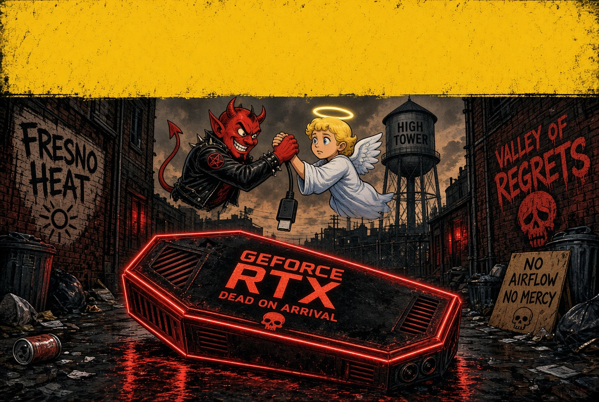